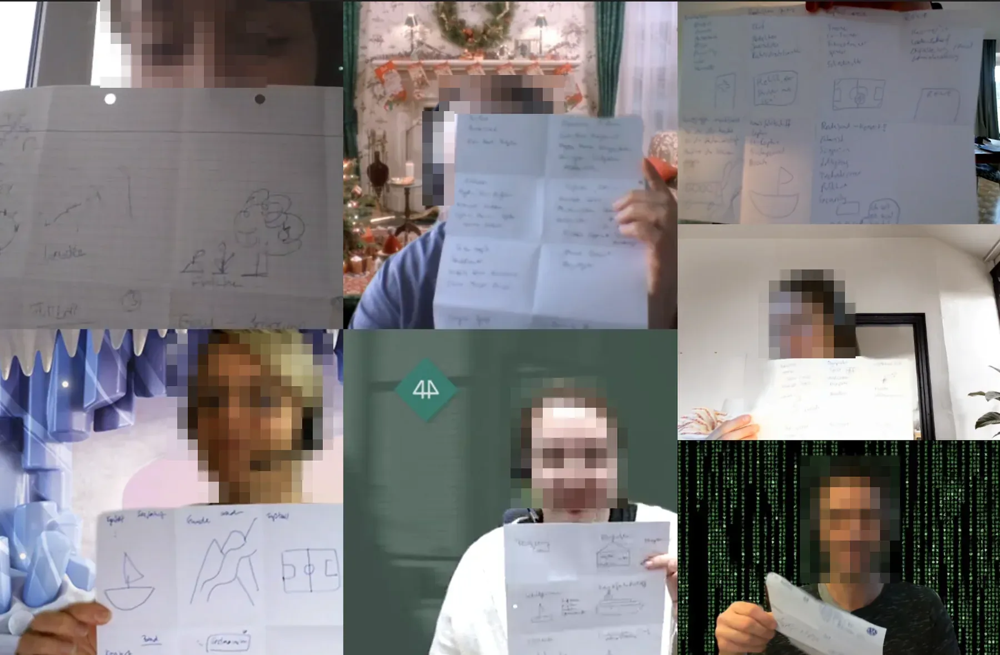
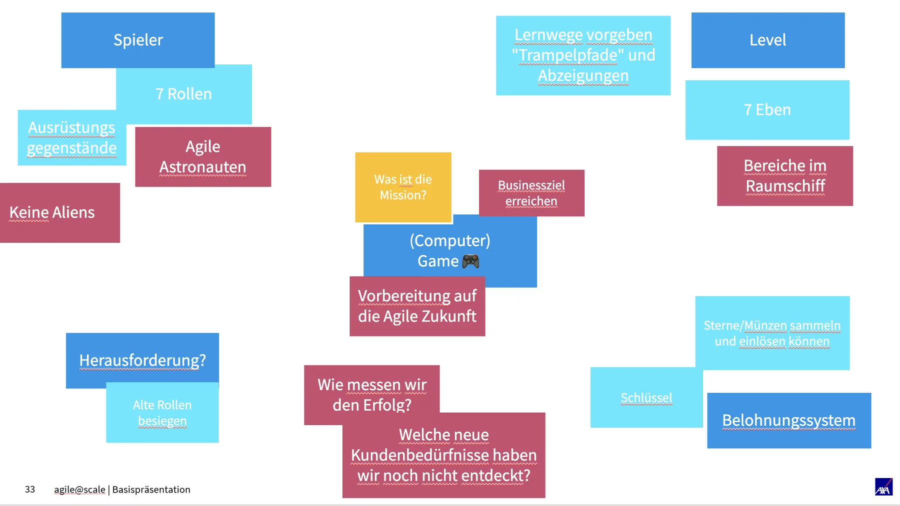
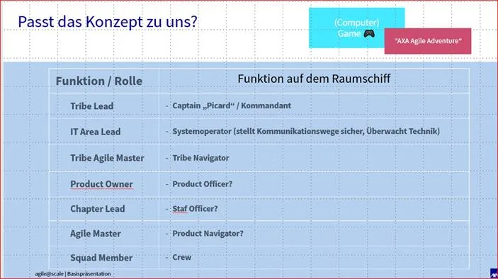
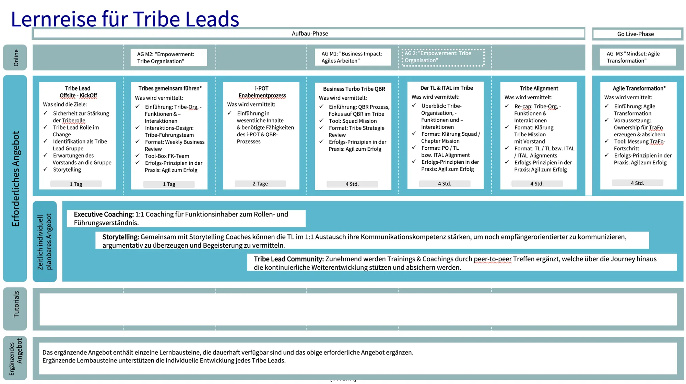
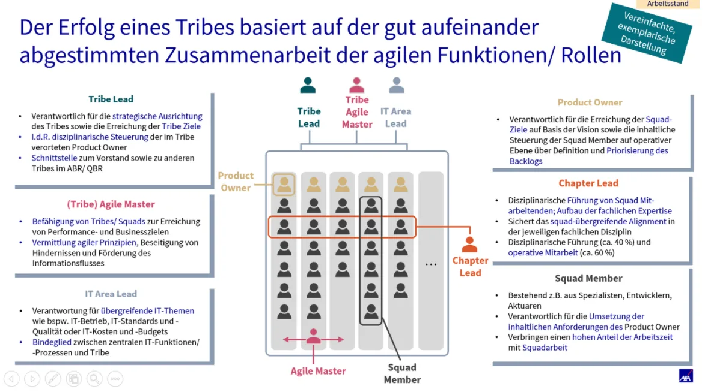
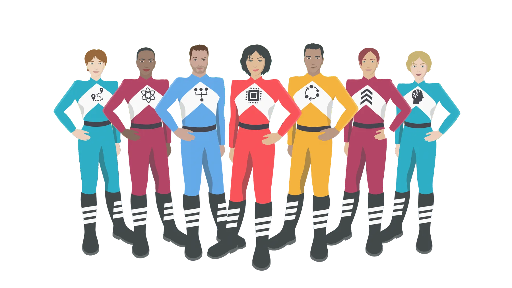
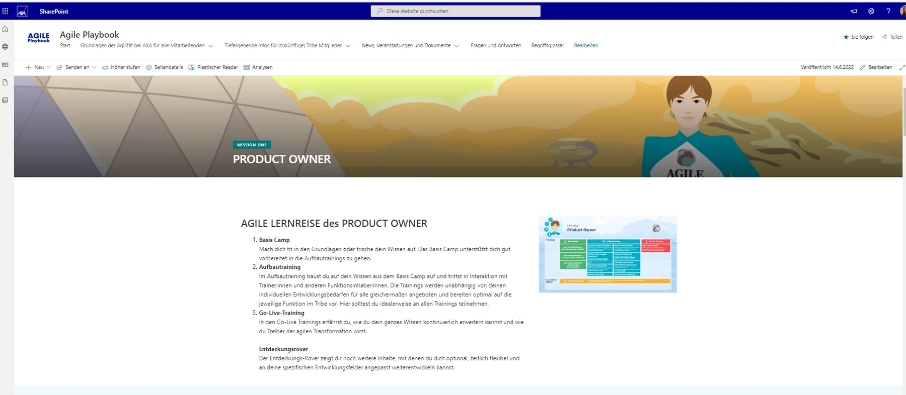

Let the team name the change
A theme created by the people who live the transformation carries more weight than one handed down.
protected case study
This case study is password protected. Don't have the code? Email hi@annikagromig.com.
case study
Creative workshop & learning platform, AXA
AXA, one of the world's leading insurance companies, was in the middle of a company-wide agile transformation. Employees had plenty of learning material to work through, but nothing that tied it together or made them want to start.
I led a creative workshop with the AXA agile team to find a theme for the transformation. The team chose a space mission. I then turned that idea into the concept and structure of an online learning platform, where every agile role has its own journey.
the problem
An agile transformation is a company-wide commitment, and a process that is easy to underestimate. Every employee has to learn new roles, new rituals and a new way of working together.
The agile team at AXA had already set up an online learning platform with courses, tutorials and reading material. But two things were holding it back:
How might we turn a company-wide change program into a journey people actually want to take?
the workshop
Instead of handing the team a theme, I wanted the people who live the transformation every day to create it. I designed and hosted a remote workshop with members of the agile team.
Find a theme that is broad enough to fit every role in the agile team, and that can carry the "Learning Journey", the series of online courses every team member goes through.
I used Crazy Eights, a fast sketching exercise where each participant draws eight ideas in eight minutes. It keeps people on their toes, forces quick thinking and leaves no time to filter out "bad" ideas. Some of the best directions come from exactly those.

finding the theme
The sketches covered a lot of ground: computer games with players and levels, a reward system, agile astronauts. We clustered the ideas, discussed them, and the group converged on one: a spaceship.
A good theme had to do more than look nice, so we tested it against the brief before committing:
The spaceship passed both. A crew with clearly defined functions mirrors an agile setup surprisingly well, and a mission gives the learning path a natural sense of progress. The idea became Mission to Planet One.

| Agile role | Function on the spaceship |
|---|---|
| Tribe Lead | Captain and commander |
| IT Area Lead | Systems operator, keeps communication and technology running |
| Tribe Agile Master | Tribe navigator |
| Squad Member | Crew |

A theme is not decoration. It only works if it can carry the structure underneath.
structure
Before any of the theme could reach employees, the content needed order. I went through the existing material role by role and cleaned up each step of the Learning Journey.
Every journey now follows the same four stages, named to fit the mission:
A shared structure across all roles means employees learn how the platform works once, and can then find their way through any journey.


implementation
The platform had to live on Microsoft SharePoint, AXA's existing intranet tool. Rather than fight the constraint, I designed within it, using standard SharePoint building blocks so the agile team could maintain and extend the pages themselves.
Introduces the mission and explains the agile process. Each role is represented by an illustrated crew member, with a short description and a direct link to that role's Learning Journey.
Each role gets its own page, organized into the four stages of the mission. Course tiles are color-coded by stage, so it is always clear where you are and what comes next.
The crew illustrations were created by an external illustrator.

the outcome
The agile transformation got a name, a story and a cast of characters that the team created themselves.
Behind the theme, the learning platform now has a clear structure: one landing page that explains the mission, and one journey per role that always follows the same four stages. Employees no longer have to search through everything. They follow their own path.
A theme created by the people who live the transformation carries more weight than one handed down.
The spaceship worked because roles and learning stages map onto it, not just because it looks good.
A clear information architecture matters more than the tool. SharePoint was enough once the structure was right.
See every screen & flow
A visual-only collection of the workshop results, learning journeys and SharePoint pages from this project, all in one place.
